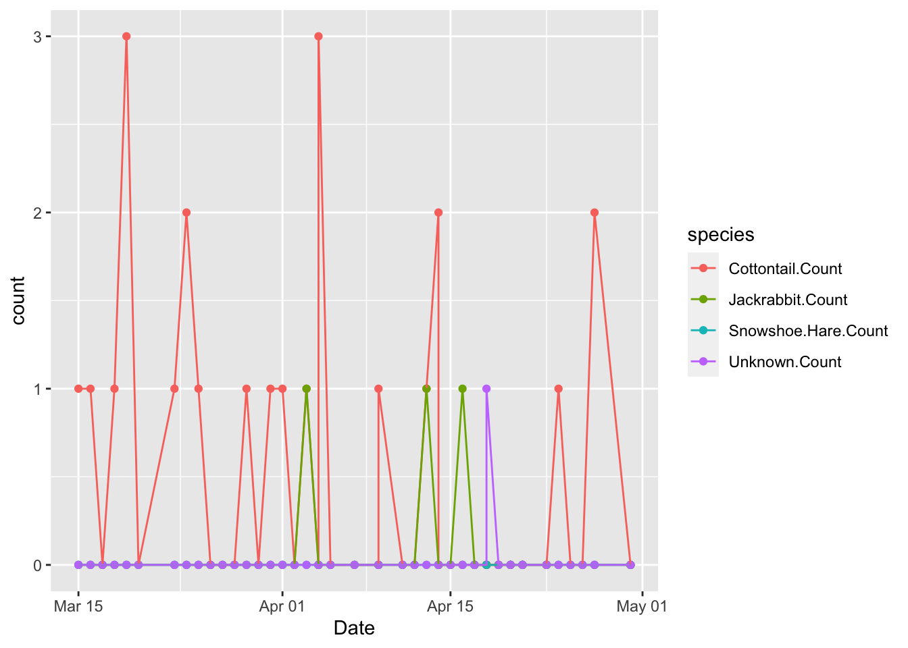
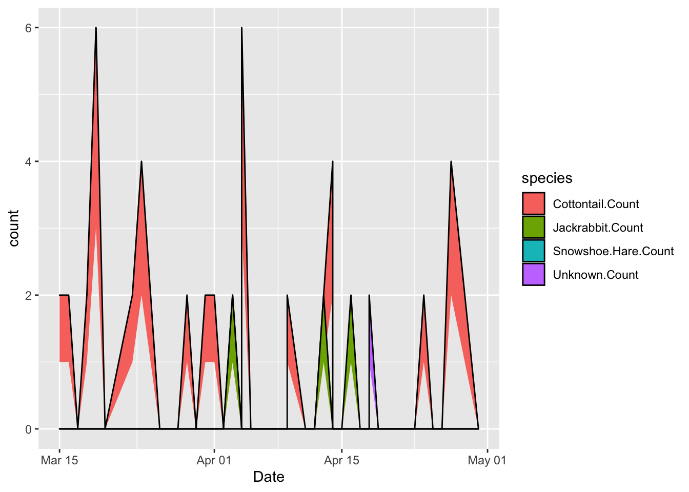
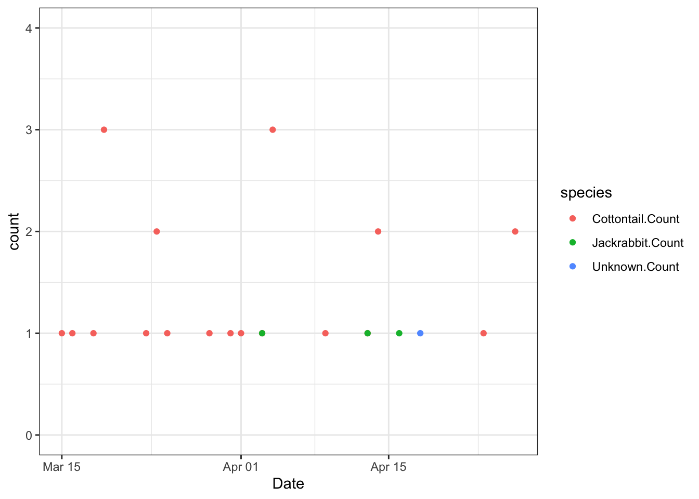
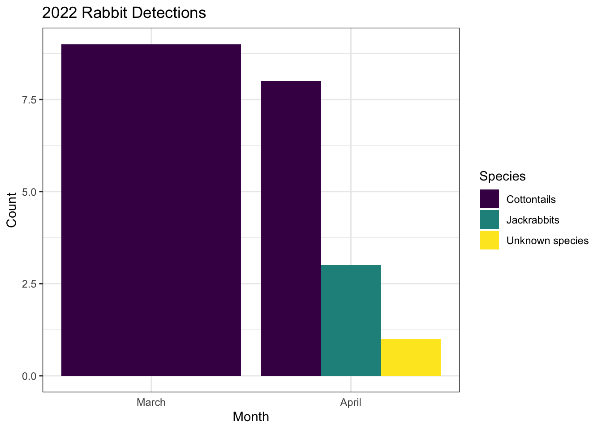
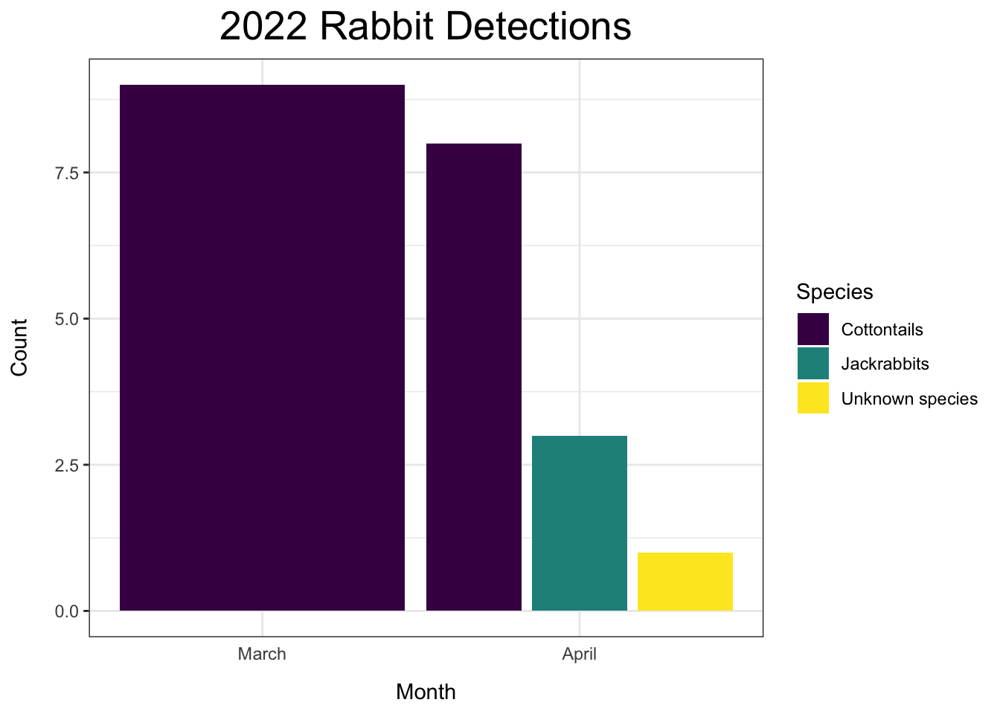

Chapter 4 Build a figure
4.1 I would like to work toward building a figure showing counts of the various rabbit species over time (dates). I may need to further manipulate the data so it is arranged in a way I can plot it.
library(ggplot2)
library(tidyverse)
library(dplyr)
library(ggridges)
library(viridis)## Loading required package: viridisLitelibrary(lubridate)##
## Attaching package: 'lubridate'## The following objects are masked from 'package:base':
##
## date, intersect, setdiff, union4.2 Pivot the data
rab_long <- rabbits %>%
pivot_longer(cols = c("Cottontail.Count", "Jackrabbit.Count",
"Snowshoe.Hare.Count", "Unknown.Count"),
names_to = "species", values_to = "count") %>%
view()4.3 Now we are ready to plot! Hopefully…
ggplot(data = rab_long, aes(x = Date, y = count, color = species)) +
geom_point() +
geom_line()
I made a rough plot of the data, but I don’t like how the zeros are plotted this way. I need to explore other options.
4.4 Trying something else.
ggplot(data = rab_long, aes(x = Date, y = count, fill = species, height = count)) +
geom_ridgeline()
This is really ugly! I have to keep trying.
4.5 Another one
I think I should filter out the 0’s in my data since they are implied.
rab_long <- rab_long %>%
filter(count != 0) %>%
view()This seems to have accomplished what I wanted!
ggplot(data = rab_long, aes(x = Date, y = count, color = species, fill = species)) +
geom_point(shape = 21) +
ylim(0, 4) +
theme_bw()
I don’t think this is the best way to display the data, so I am going to just show species total each month.
rab_simple <- rab_long %>%
dplyr::group_by(month(Date), species) %>%
tally()
rab_simple <- rab_simple %>%
as.tibble() %>%
rename("mo" = "month(Date)")## Warning: `as.tibble()` was deprecated in tibble 2.0.0.
## Please use `as_tibble()` instead.
## The signature and semantics have changed, see `?as_tibble`.
## This warning is displayed once every 8 hours.
## Call `lifecycle::last_lifecycle_warnings()` to see where this warning was generated.ggplot(data = rab_simple, aes(x = mo, y = n, fill = species)) +
geom_bar(stat = "identity", position = "dodge") +
theme_bw() +
scale_x_continuous(breaks = unique(rab_simple$mo), minor_breaks = NULL,
labels = c("March", "April")) +
labs(x = "Month", y = "Count", fill = "Species") +
ggtitle("2022 Rabbit Detections") +
theme(axis.ticks.x = element_blank()) +
scale_fill_viridis_d(labels = c("Cottontails", "Jackrabbits", "Unknown species"))
I feel like this is finally pretty good, but I will try to make it even better.
4.6 Final Figure
I am copying and pastying the previous code and adding to it.
ggplot(data = rab_simple, aes(x = mo, y = n, fill = species)) +
geom_bar(stat = "identity", position = position_dodge(width = 1)) +
theme_bw() +
scale_x_continuous(breaks = unique(rab_simple$mo), minor_breaks = NULL,
labels = c("March", "April")) +
labs(x = "Month", y = "Count", fill = "Species") +
ggtitle("2022 Rabbit Detections") +
theme(plot.title = element_text(hjust = 0.5, size = 20)) +
theme(axis.title.y = element_text(margin = margin(r = 12))) +
theme(axis.title.x = element_text(margin = margin(t = 10))) +
theme(axis.ticks.x = element_blank()) +
scale_fill_viridis_d(labels = c("Cottontails", "Jackrabbits", "Unknown species"))